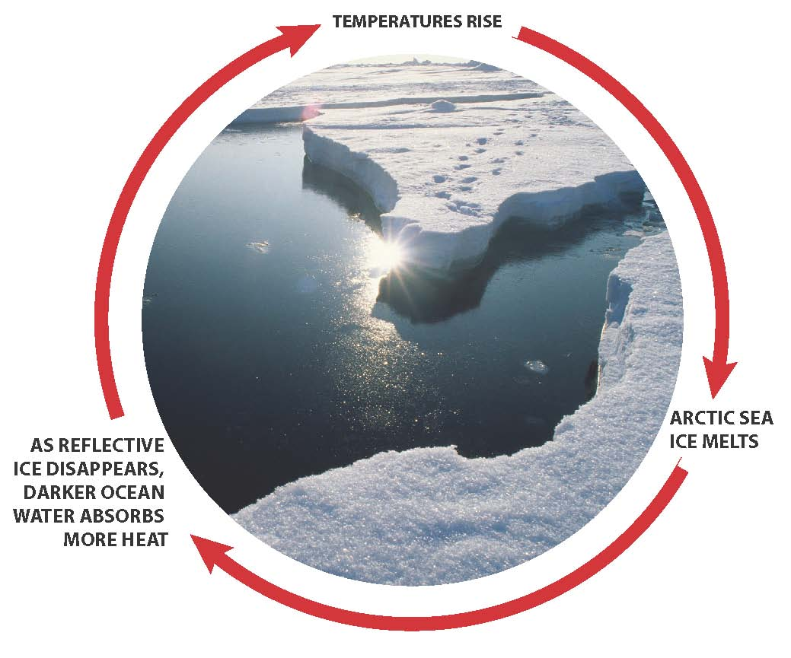
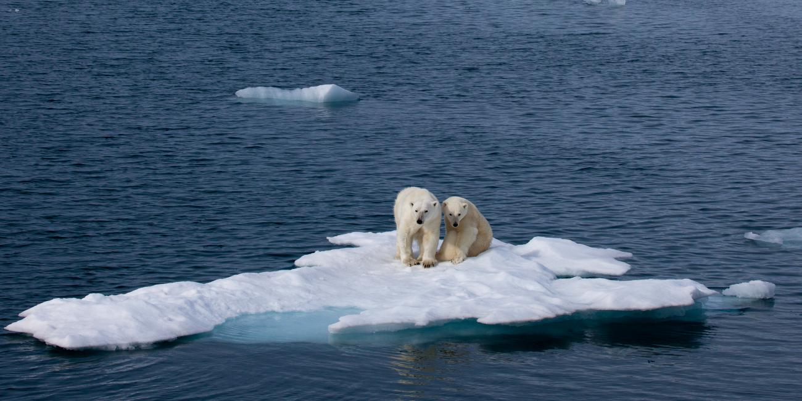
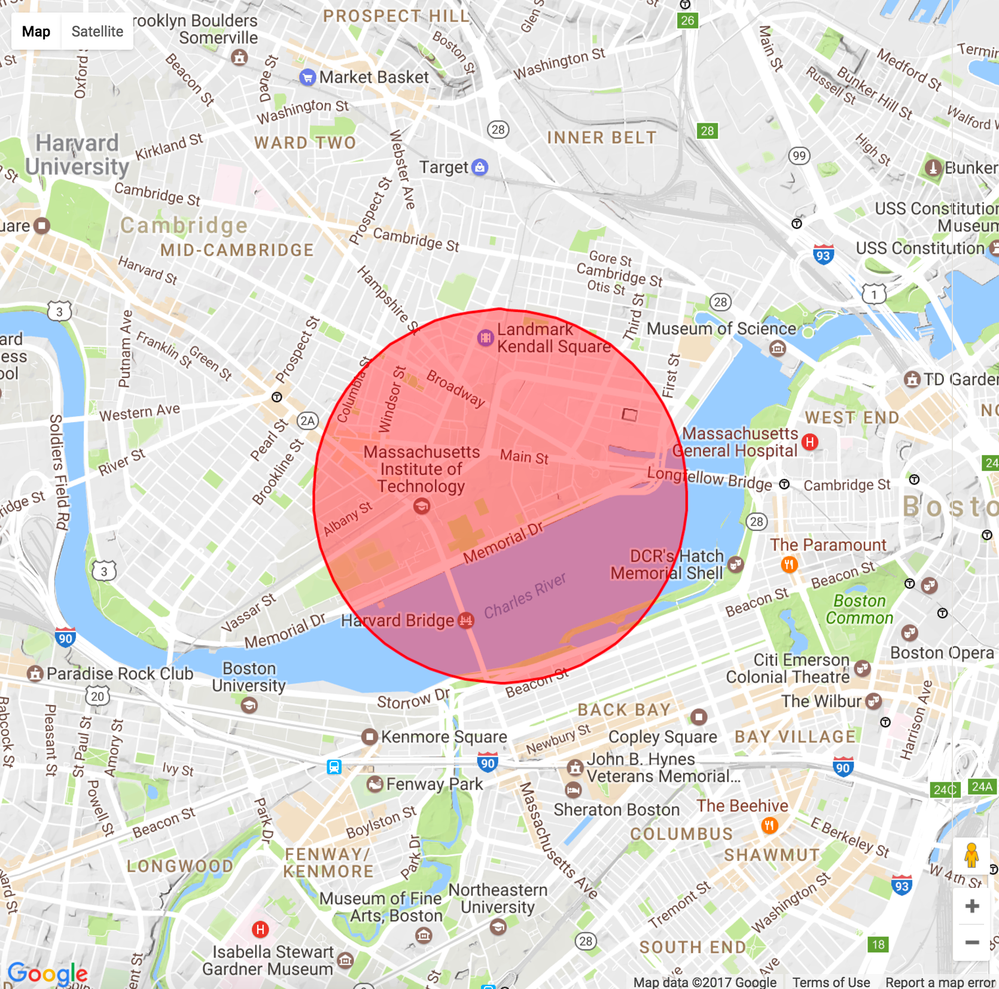
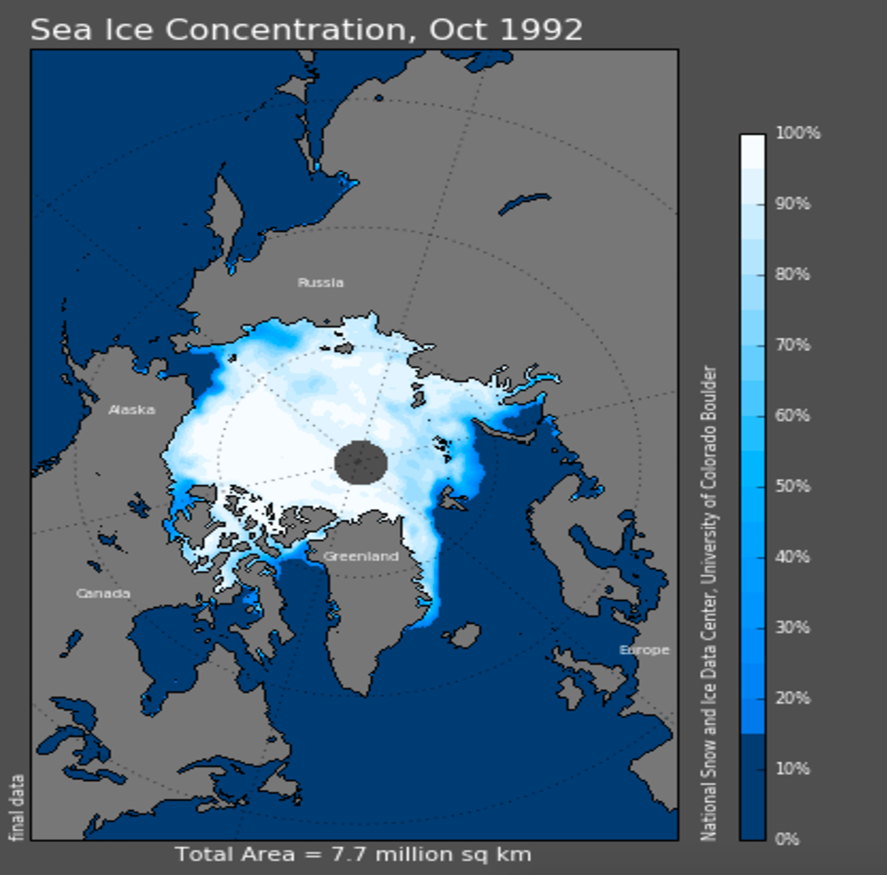
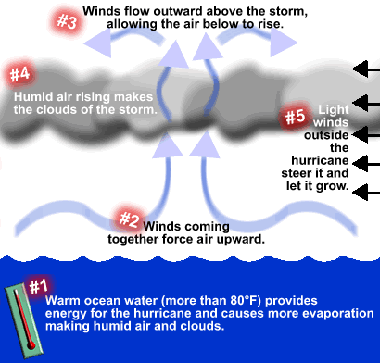

Why does it matter?
The destruction of the Artic directly affects polar bears, ice seals, walruses, arctic foxes. The loss of Arctic sea ice results in less sunlight being reflected away, resulting in a positive feedback loop which accelerates global warming.

Let's put it all together!
Use the scroller to explore how the arctic has shrunk over the past few decades. The map on the left shows a circle around you with the same area as the Arctic sea ice. As the sea ice melts away, so do the things around you. How long can you last?
The Arctic Ice Project

Here's where you are:
Here's the arctic:
But what if I like warm weather?
-
Do you also like severe weather events like hurricanes and tsunamis? How about poisonous jellyfish stings
next time you go to the beach? Or further destabilization of arid regions such as the Middle East? Those
are just a few of the many negative consequences which will result from climate change.

Get involved!
Call your elected officials and ask them to oppose H.R. 861: To terminate the Environmental Protection Agency. Enter your zip code below to find your representatives:
Over {{zip_calls}} people have called their representatives in this zip
code to demand a cleaner future. Add your name to the list.
| {{result.first_name}} {{result.last_name}} | {{result.phone}} |